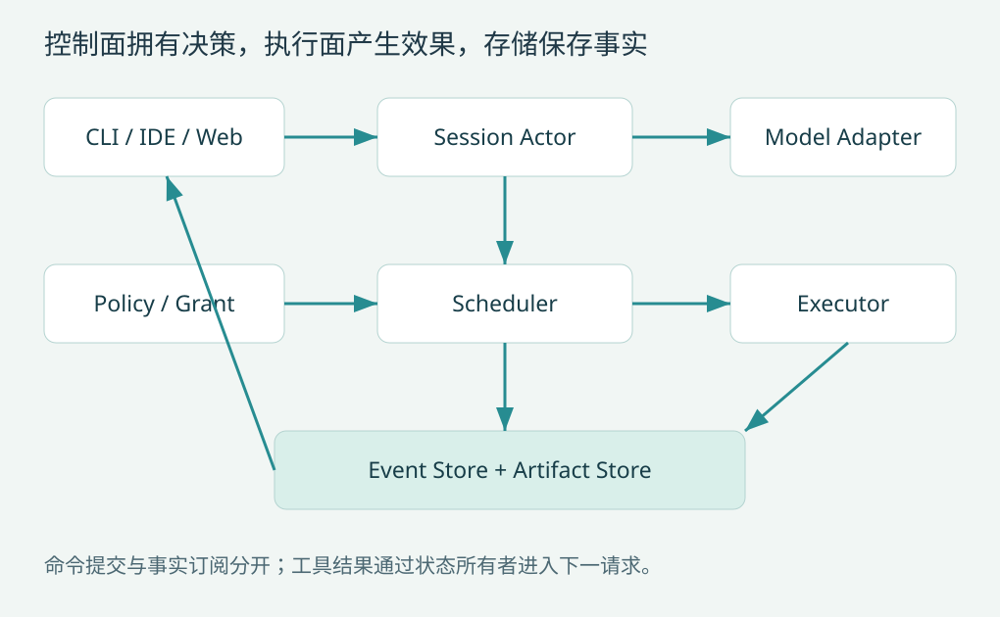

第 2 章 总体架构：控制面、执行面与事实存储
先分开三种权力
控制面负责任务、循环、请求构造、策略与预算；执行面负责文件、进程、网络和外部服务；事实存储负责事件、调用状态与产物引用。UI 通过命令提出意图，通过事件观察状态。模型通过响应提出行动，不能直接持有宿主凭据或修改存储。
CLI / IDE / Web
↓ Command ↑ Event / Projection
Session Actor → Context Builder → Model Adapter
↓ ↓ ↓ Response
Policy Engine ← Tool Planner ← Response Assembler
↓ Approved Invocation
Scheduler → Executor / Workspace / Sandbox
↓ Settled Outcome
Event Store + Artifact Store → UI projection / next request这张依赖图有一个刻意安排：Executor 不直接调用模型，UI 不直接修改会话历史。否则工具实现可能在无人记录时补发模型请求，界面可能显示一段从未进入有效历史的“完成消息”。

单进程起步，保持接口可拆分
第一版用单进程运行会话 actor、SQLite 和工具执行器即可。接口仍应通过不可变请求对象传递状态，避免工具拿到整个会话实例并随意修改。将来把执行器迁到容器或远程 worker 时，只需要把同一调用对象序列化，而不是重新寻找隐藏依赖。
设计接口如下：
Model.generate(PreparedRequest, Cancellation) -> ResponseStream
Tools.resolve(ToolPlanRevision, name) -> ToolDefinition
Policy.evaluate(Invocation, Authority) -> Decision
Executor.run(ApprovedInvocation) -> ToolOutcome
Store.commit(ExpectedVersion, Events, StateChanges) -> CommitApprovedInvocation 应由策略层构造，不能让任意工具调用者用一个 approved=true 字段伪造。跨进程版本可采用签名票据或由受信控制面代理派发；同进程版本至少隐藏构造入口并重新验证关键字段。
明确模块的状态所有者
| 状态 | 唯一写入者 | 其他模块如何读取 |
|---|---|---|
| 会话有效历史、输入认领 | Session Actor | 不可变快照或投影 |
| 进程表、输出游标 | Process Manager | 进程句柄 API |
| 审批请求与授权票据 | Policy Service | 按调用查询 |
| 工具注册版本 | Registry Owner | 固定版本 ToolPlan |
| 已提交事件与状态 | Store transaction | 按序读取 |
工具只能返回结果和附加上下文建议，由 actor 在规定边界接纳。不要同时让模型消费者线程、工具线程和 WebSocket 回调修改 messages[]。
用一条完整任务检查架构
搜索工具返回目标函数位置；读取工具返回正文与内容哈希；模型据此提出编辑；策略绑定文件、参数与权限；执行器重新读文件检查哈希，完成替换；结果提交后才形成下一次请求；模型请求测试；验证器解释退出状态；最终报告列出差异与检查。
每一步都有输入版本和结果身份，因此能够解释模型为什么作出下一步。若编辑失败，失败结果进入模型；若授权等待，actor 保持任务状态但不阻塞所有其他会话；若存储提交失败，UI 不应看到已经确定成功的终结事件。
四个参考项目怎样帮助选型
Codex 的步骤上下文与工具计划适合参考快照边界；DeepSeek Harness 的服务定义、provider、consumer 帮助设计可替换执行世界；Pi 的模型层与循环内核帮助缩小核心职责；Claude Code 的工具协议提醒产品需要呈现元数据和中断语义。C02C11D15P02A04
这些经验可以组合，但不能直接共享未经适配的对象。尤其不能把 Pi 的内存消息、DeepSeek 的事件序列和 Codex 的协议项都称作一个统一 Message 后丢失各自语义。适配时应先建立本系统的领域模型，再写有损转换的明确规则。
演进时保留哪些边界
引入远程执行后，控制面仍拥有授权、调用身份与结果接纳权；worker 只持有最小执行能力。引入多个模型后，adapter 负责协议差异，actor 负责重试和历史。引入多个 UI 后，事件格式继续统一，终端文本只是一个呈现结果。
架构验收可以做替换实验：把本地读取换成假远程读取，模型层与 UI 不应改动；把模型换成脚本驱动，工具与存储不应改动。如果替换一个模块需要修改所有层，就要检查是否泄露了隐含职责。